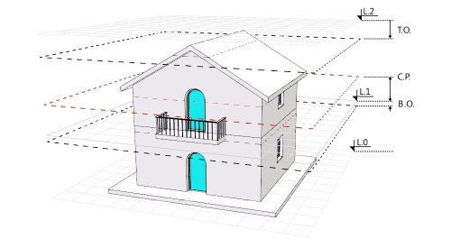

vaNiveles
Icono:
 clic izquierdo
clic izquierdo

Menú:
El comando vaNiveles abre el diálogo acoplable Administrador de niveles desde el que es posible crear, eliminar y editar nuevos edificios y niveles.
Desde el cuadro de diálogo Administrador de niveles se puede controlar el PlanoC de cada nivel (plano de construcción), el estado de visibilidad y bloqueo/desbloqueo, además de los valores de elevación y plano de corte.
El cuadro de diálogo Administrador de niveles se divide en dos partes:

Cuadro de diálogo Administrador de niveles.

Parámetros del Nivel "1":
 |
Crea nuevos edificios a partir de los cuales se pueden añadir niveles. Cada edificio tiene su propio valor de elevación y el valor de elevación de sus niveles son relativos a ese edificio. |
 |
Agrega un nuevo nivel a un edificio seleccionado. El nuevo nivel se creará de forma automática por encima del nivel existente superior y tendrá por defecto el mismo valor de la elevación que el nivel inferior. Para crear niveles debe crearse un edificio. |
 |
Elimina un nivel o edificio específico. Esta opción no afecta a todos los objetos de Rhino y VisualARQ que contiene el nivel o edificio eliminado. Estos se quedan en el mismo lugar. |
El Plano de corte representa un plano de sección horizontal invisible que tiene cada nivel, situado a una altura específica de cada elevación del nivel. El botón Plano de corte activa o desactiva el Plano de corte de un nivel seleccionado en la vista activa. Debe crearse un edificio y un nivel para activar el estado de Plano de corte.
Cuando el plano de corte está activado en un determinado nivel en la vista activa, no se mostrará nada de lo que haya por encima del plano de corte de ese nivel.
Cuando el plano de corte está activado en la vista Superior, los objetos de VisualARQ como puertas, ventanas, escaleras, etc. muestran su representación gráfica de vista en planta en 2D.
 |
Plano de corte activado: la vista muestra el nivel seccionado según la posición del plano de corte. |
 |
Plano de corte desactivado: la vista muestra todo el nivel (según su estado de visibilidad Activado/Desactivado). |
 |
Plano de corte desactivado: debe seleccionar un nivel para activar el estado del plano de corte. |

Vista del Nivel 0 y Nivel 1 con el plano de corte del Nivel 1 activado.

Vista del Nivel 0 y Nivel 1 con el plano de corte del Nivel 1 desactivado. (La visualización del Nivel 2 está desactivada)

Vista del Nivel 1 con el plano de corte desactivado. (La visualización de los Niveles 0 y 2 está desactivada)
 |
El PlanoC (plano de construcción) determina la elevación del plano desde donde se está trabajando. Haga clic en en cualquier icono de PlanoC de nivel para mover el PlanoC a la elevación de ese nivel en la vista activa. |
El estado de visibilidad Activado/Desactivado de los niveles muestra u oculta los objetos o partes de los objetos situados entre la elevación del nivel actual y la elevación del nivel superior (teniendo en cuenta los valores de desfase superior e inferior).
 |
El nivel está visible y puede ver objetos o partes de los objetos en este nivel. |
 |
El nivel no está visible y no puede ver objetos ni partes de los objetos en este nivel. |
Nota: los niveles intermedios no pueden ocultarse individualmente. Cuando un nivel intermedio está oculto, el resto de niveles inferiores se oculta automáticamente.
La vista en planta muestra la representación en 2D de cualquier nivel, en el PlanoC de la vista activa. Esta representación en 2D no es editable y solo muestra los objetos seccionados en el nivel seleccionado según la posición del plano de corte en ese nivel.
 |
La representación en 2D del nivel seleccionado está visible en el PlanoC de la vista activa. |
 |
La representación en 2D del nivel seleccionado no está visible en el PlanoC de la vista activa. |
Para definir un nivel específico como planta actual en la vista activa, haga doble clic en el nombre del nivel. Esta operación colocará automáticamente el PlanoC en el nivel seleccionado y activará este nivel en el caso de que estuviese oculto.
El valor de Elevación indica la altura base de cada edificio o nivel y la posición de un plano de construcción relativo a cada edificio o nivel. Determina qué parte del modelo corresponde a cada nivel. Los valores de elevación de los niveles son relativos a la altura de la elevación del edificio. El valor de elevación del edificio se calcula a lo largo del eje Z del documento.

La marca de elevación del nivel actual aparece resaltada.
El plano de corte determina la elevación a la que se realiza la sección horizontal de cada planta; esto significa que sólo se representan aquellos objetos que se encuentran a esa elevación, o que están por debajo de ella.
NOTA: Cuando una vista cambia al modo de vista en planta de VisualARQ, el modo de visualización cambia al modo "oculto" y se pasa a la vista Superior. Si está activada la vista en planta, la ventana muestra cualquier modo de visualización seleccionado aunque se cambie la vista del nivel.
El desfase superior determina el valor por el cual se aumenta o disminuye el límite superior del nivel cuando se ocultan niveles enteros. Esta opción es especialmente útil cuando se oculta la parte superior de un edificio y también quiere ocultar la losa superior del último nivel mostrado. Este valor es irrelevante para el nivel superior de un edificio y solo afecta a las vistas que tienen el plano de corte desactivado.
El desfase inferior determina el valor por el cual se aumenta o disminuye el límite inferior del nivel cuando se ocultan niveles enteros. Esta opción es especialmente útil cuando se oculta la parte inferior de un edificio y también quiere ocultar la losa inferior del último nivel mostrado. Este valor es irrelevante para el nivel inferior de un edificio y solo afecta a las vistas que tienen el plano de corte desactivado.